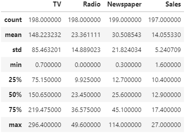
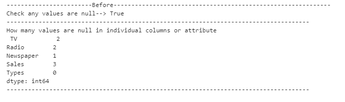

Data wrangling is the procedure of acquiring, analysing, and manipulating raw data into a suitable format for faster processing and evaluation.
Data wrangling can be divided into the following section:
import pandas as pd
df=pd.read_csv("data/Advertising.csv")
df.info()The output of this code is as follows:
<class 'pandas.core.frame.DataFrame'>
RangeIndex: 200 entries, 0 to 199
Data columns (total 5 columns):
# Column Non-Null Count Dtype
--- ------ -------------- -----
0 TV 198 non-null float64
1 Radio 198 non-null float64
2 Newspaper 199 non-null float64
3 Sales 197 non-null float64
4 Types 200 non-null object
dtypes: float64(4), object(1)
memory usage: 7.9+ KBdf.describe()The output of this code is as follows:

print("------------------------Before-------------------------------------------------------------")
print("Check any values are null-->",df.isnull().values.any())
print("-------------------------------------------------------------------------------------")
print("How many values are null in individual columns or attribute\n",df.isnull().sum())
print("-------------------------------------------------------------------------------------")
df2=df.copy().bfill()
print("---------------------- After ---------------------------------------------------------------")
print("Check any values are null-->",df2.isnull().values.any())
print("-------------------------------------------------------------------------------------")
print("How many values are null in individual columns or attribute\n",df2.isnull().sum())
print("-------------------------------------------------------------------------------------")The output of this code is as follows:
